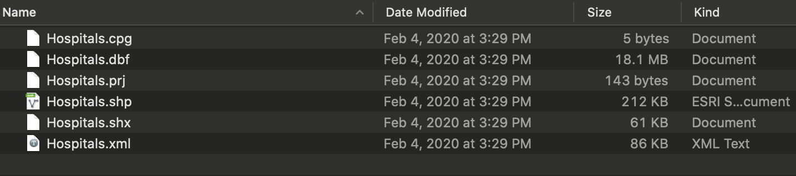
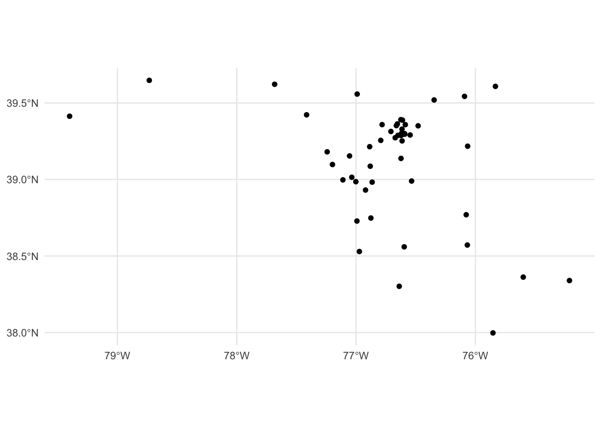
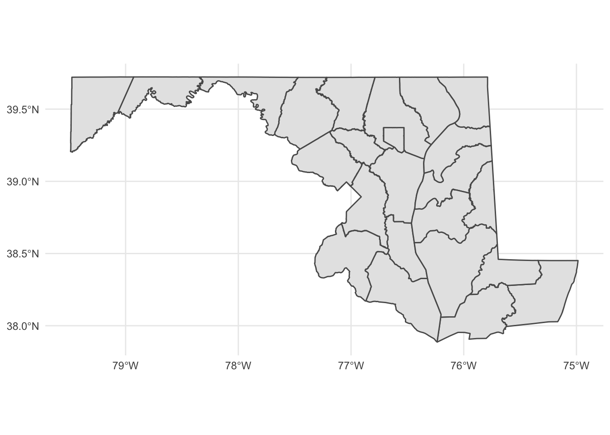
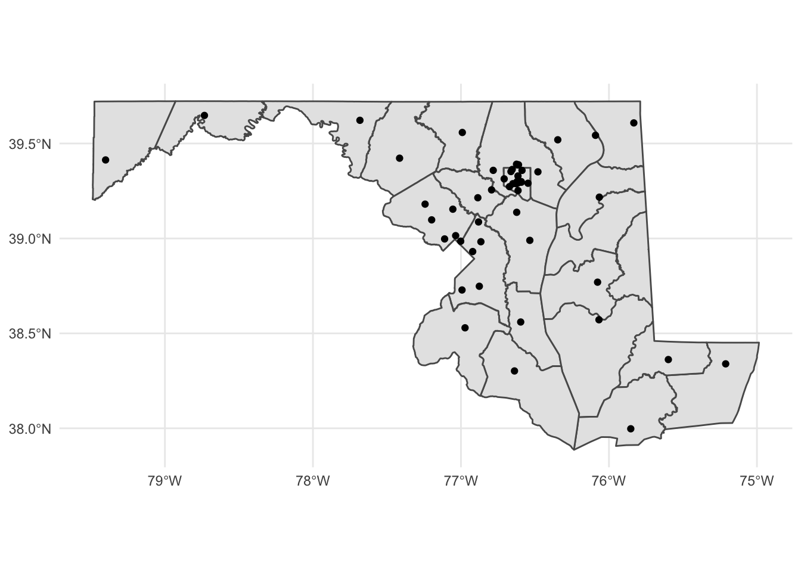
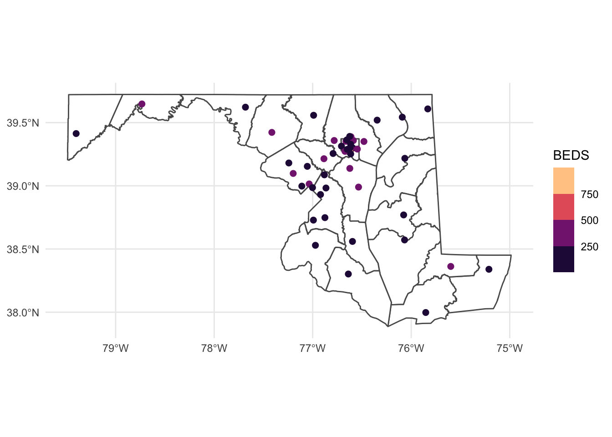

Chapter 20 Geographic data basics
Up to now, we’ve been looking at patterns in data for what is more than this, or what’s the middle look like. We’ve calculated metrics like per capita rates, or looked at how data changes over time.
Another way we can look at the data is geographically. Is there a spatial pattern to our data? Can we learn anything by using distance as a metric? What if we merge non-geographic data into geographic data?
The bad news is that there isn’t a One Library To Rule Them All when it comes to geo queries in R. But there’s one emerging, called Simple Features, that is very good.
Go to the console and install it with install.packages("sf")
To understand geographic queries, you have to get a few things in your head first:
- Your query is using planar space. Usually that’s some kind of projection of the world. If you’re lucky, your data is projected, and the software will handle projection differences under the hood without you knowing anything about it.
- Projections are cartographers making opinionated decisions about what the world should look like when you take a spheroid – the earth isn’t perfectly round – and flatten it. Believe it or not, every state in the US has their own geographic projection. There’s dozens upon dozens of them.
- Geographic queries work in layers. In most geographic applications, you’ll have multiple layers. You’ll have a boundary file, and a river file, and a road file, and a flood file and combined together they make the map. But you have to think in layers.
- See 1. With layers, they’re all joined together by the planar space. So you don’t need to join one to the other like we did earlier – the space has done that. So you can query how many X are within the boundaries on layer Y. And it’s the plane that holds them together.

20.1 Importing and viewing data
Let’s start with the absolute basics of geographic data: loading and viewing. Load libraries as usual.
library(tidyverse)
library(sf)## Linking to GEOS 3.8.1, GDAL 3.2.1, PROJ 7.2.1library(janitor)First: an aside on geographic data. There are many formats for geographic data, but data type you’ll see the most is called the shapefile. It comes from a company named ERSI, which created the most widely used GIS software in the world. For years, they were the only game in town, really, and the shapefile became ubiquitous, especially so in government and utilities.
So more often than not, you’ll be dealing with a shapefile. But a shapefile isn’t just a single file – it’s a collection of files that combined make up all the data that allow you to use it. There’s a .shp file – that’s the main file that pulls it all together – but it’s important to note if your shapefiles has a .prj file, which indicates that the projection is specified.
The data we’re going to be working with is a file from the Department of Homeland Security that is every hospital in the US and the number of beds they have. I’m writing this during the days of coronavirus, and suddenly the number of hospital beds is a top concern. So let’s look at where hospital beds are and how many of them are there.
When you do, it should look something like this:

Simlar to readr, the sf library has functions to read geographic data. In this case, we’re going to use st_read to read in our hospitals data. And then glimpse it to look at the columns.
hospitals <- st_read("data/Hospitals/Hospitals.shp")## Reading layer `Hospitals' from data source
## `/Users/derekwillis/code/datajournalismbook/data/Hospitals/Hospitals.shp'
## using driver `ESRI Shapefile'
## Simple feature collection with 7581 features and 32 fields
## Geometry type: POINT
## Dimension: XY
## Bounding box: xmin: -176.6403 ymin: -14.29024 xmax: 145.7245 ymax: 71.29285
## Geodetic CRS: WGS 84glimpse(hospitals)## Rows: 7,581
## Columns: 33
## $ OBJECTID <dbl> 1, 2, 3, 4, 5, 6, 7, 8, 9, 10, 11, 12, 13, 14, 15, 16, 17, …
## $ ID <chr> "0005793230", "0053391362", "0011190023", "0017090028", "00…
## $ NAME <chr> "CENTRAL VALLEY GENERAL HOSPITAL", "LOS ROBLES HOSPITAL & M…
## $ ADDRESS <chr> "1025 NORTH DOUTY STREET", "150 VIA MERIDA", "4060 WHITTIER…
## $ CITY <chr> "HANFORD", "WESTLAKE VILAGE", "LOS ANGELES", "HOLLYWOOD", "…
## $ STATE <chr> "CA", "CA", "CA", "CA", "CA", "CA", "CA", "CA", "CA", "CA",…
## $ ZIP <chr> "93230", "91362", "90023", "90028", "91706", "90712", "9101…
## $ ZIP4 <chr> "NOT AVAILABLE", "NOT AVAILABLE", "NOT AVAILABLE", "NOT AVA…
## $ TELEPHONE <chr> "NOT AVAILABLE", "NOT AVAILABLE", "NOT AVAILABLE", "(323) 4…
## $ TYPE <chr> "GENERAL ACUTE CARE", "GENERAL ACUTE CARE", "GENERAL ACUTE …
## $ STATUS <chr> "CLOSED", "OPEN", "OPEN", "OPEN", "OPEN", "OPEN", "OPEN", "…
## $ POPULATION <dbl> 49, 62, 127, 100, 95, 172, 49, 101, 16, 78, 87, 269, 42, 27…
## $ COUNTY <chr> "KINGS", "VENTURA", "LOS ANGELES", "LOS ANGELES", "LOS ANGE…
## $ COUNTYFIPS <chr> "06031", "06111", "06037", "06037", "06037", "06037", "0603…
## $ COUNTRY <chr> "USA", "USA", "USA", "USA", "USA", "USA", "USA", "USA", "US…
## $ LATITUDE <dbl> 36.33616, 34.15494, 34.02365, 34.09639, 34.06304, 33.85971,…
## $ LONGITUDE <dbl> -119.64567, -118.81574, -118.18416, -118.32523, -117.96744,…
## $ NAICS_CODE <chr> "622110", "622110", "622110", "622110", "622110", "622110",…
## $ NAICS_DESC <chr> "GENERAL MEDICAL AND SURGICAL HOSPITALS", "GENERAL MEDICAL …
## $ SOURCE <chr> "http://www.oshpd.ca.gov/HID/Facility-Listing.html", "http:…
## $ SOURCEDATE <chr> "2016-02-04T00:00:00.000Z", "2018-08-08T00:00:00.000Z", "20…
## $ VAL_METHOD <chr> "IMAGERY/OTHER", "IMAGERY/OTHER", "IMAGERY/OTHER", "IMAGERY…
## $ VAL_DATE <chr> "2014-02-10T00:00:00.000Z", "2014-02-10T00:00:00.000Z", "20…
## $ WEBSITE <chr> "http://www.hanfordhealth.com", "http://www.losrobleshospit…
## $ STATE_ID <chr> "NOT AVAILABLE", "NOT AVAILABLE", "NOT AVAILABLE", "NOT AVA…
## $ ALT_NAME <chr> "NOT AVAILABLE", "NOT AVAILABLE", "NOT AVAILABLE", "HOLLYWO…
## $ ST_FIPS <chr> "06", "06", "06", "06", "06", "06", "06", "06", "06", "06",…
## $ OWNER <chr> "PROPRIETARY", "PROPRIETARY", "PROPRIETARY", "PROPRIETARY",…
## $ TTL_STAFF <dbl> -999, -999, -999, -999, -999, -999, -999, -999, -999, -999,…
## $ BEDS <dbl> 49, 62, 127, 100, 95, 172, 49, 101, 16, 78, 87, 269, 42, 27…
## $ TRAUMA <chr> "NOT AVAILABLE", "NOT AVAILABLE", "NOT AVAILABLE", "NOT AVA…
## $ HELIPAD <chr> "N", "N", "N", "N", "N", "N", "N", "N", "N", "N", "Y", "N",…
## $ geometry <POINT [°]> POINT (-119.6457 36.33616), POINT (-118.8157 34.15494…This looks like a normal dataframe, and mostly it is. We have one row per hospital, and each column is some feature of that hospital: the name, the address, it’s open/closed status and more. What sets this data apart from other dataframes we’ve used is the last column, “geometry,” which is of a new data type. It’s not a character or a number, it’s a “POINT,” which is composed of a longitude value and a latitude value. When we plot these on a grid of latitude and longitude, it will place a point where those two numbers intersect.
Let’s look at just Maryland hospitals. Good news – sf plays very nicely with the tidyverse, so we can filter data the way we are accustomed.
md_hospitals <- hospitals %>%
filter(STATE == "MD")
md_hospitals## Simple feature collection with 72 features and 32 fields
## Geometry type: POINT
## Dimension: XY
## Bounding box: xmin: -79.40098 ymin: 37.99756 xmax: -75.21133 ymax: 39.677
## Geodetic CRS: WGS 84
## First 10 features:
## OBJECTID ID
## 1 234 0003120785
## 2 364 0000921287
## 3 365 0001021205
## 4 366 0002321202
## 5 367 0003721215
## 6 368 0004121201
## 7 370 0004821224
## 8 397 0003421740
## 9 404 0003521742
## 10 443 0001920910
## NAME
## 1 GLADYS SPELLMAN SPECIALTY HOSPITAL AND NURSING CARE CENTER
## 2 JOHNS HOPKINS HOSPITAL
## 3 KENNEDY KREIGER INSTITUTE
## 4 MERCY MEDICAL CENTER
## 5 SINAI HOSPITAL OF BALTIMORE
## 6 UNIVERSITY OF MARYLAND MEDICAL CENTER
## 7 JOHNS HOPKINS BAYVIEW MEDICAL CENTER
## 8 BROOK LANE HEALTH SERVICES
## 9 MERITUS MEDICAL CENTER
## 10 HOLY CROSS HOSPITAL
## ADDRESS CITY STATE ZIP ZIP4
## 1 3001 HOSPITAL DRIVE HYATTSVILLE MD 20785 NOT AVAILABLE
## 2 600 NORTH WOLFE STREET BALTIMORE MD 21287 NOT AVAILABLE
## 3 707 N BROADWAY BALTIMORE MD 21205 NOT AVAILABLE
## 4 301 ST PAUL PLACE BALTIMORE MD 21202 NOT AVAILABLE
## 5 2401 WEST BELVEDERE AVE BALTIMORE MD 21215 NOT AVAILABLE
## 6 22 S GREENE ST BALTIMORE MD 21201 NOT AVAILABLE
## 7 4940 EASTERN AVENUE BALTIMORE MD 21224 NOT AVAILABLE
## 8 13218 BROOK LANE DRIVE HAGERSTOWN MD 21740 NOT AVAILABLE
## 9 11116 MEDICAL CAMPUS ROAD HAGERSTOWN MD 21742 NOT AVAILABLE
## 10 1500 FOREST GLEN ROAD SILVER SPRING MD 20910 NOT AVAILABLE
## TELEPHONE TYPE STATUS POPULATION COUNTY
## 1 (301) 497-7953 CHRONIC DISEASE CLOSED 30 PRINCE GEORGE'S
## 2 (410) 955-9540 GENERAL ACUTE CARE OPEN 951 BALTIMORE CITY
## 3 (443) 923-9305 GENERAL ACUTE CARE OPEN 70 BALTIMORE CITY
## 4 (410) 332-9237 GENERAL ACUTE CARE OPEN 281 BALTIMORE CITY
## 5 (410) 601-5131 GENERAL ACUTE CARE OPEN 467 BALTIMORE CITY
## 6 (410) 328-8667 GENERAL ACUTE CARE OPEN 800 BALTIMORE CITY
## 7 (410) 550-0123 GENERAL ACUTE CARE OPEN 477 BALTIMORE CITY
## 8 (301) 733-0330 PSYCHIATRIC OPEN 65 WASHINGTON
## 9 (240) 313-9500 GENERAL ACUTE CARE OPEN 247 WASHINGTON
## 10 (301) 754-7000 GENERAL ACUTE CARE OPEN 409 MONTGOMERY
## COUNTYFIPS COUNTRY LATITUDE LONGITUDE NAICS_CODE
## 1 24033 USA 38.93088 -76.92156 622110
## 2 24510 USA 39.29611 -76.59197 622110
## 3 24510 USA 39.29928 -76.59282 622110
## 4 24510 USA 39.29292 -76.61288 622110
## 5 24510 USA 39.35230 -76.66209 622110
## 6 24510 USA 39.28791 -76.62493 622110
## 7 24510 USA 39.29068 -76.54678 622110
## 8 24043 USA 39.67700 -77.61060 622110
## 9 24043 USA 39.62219 -77.68256 622110
## 10 24031 USA 39.01472 -77.03574 622110
## NAICS_DESC
## 1 GENERAL MEDICAL AND SURGICAL HOSPITALS
## 2 GENERAL MEDICAL AND SURGICAL HOSPITALS
## 3 GENERAL MEDICAL AND SURGICAL HOSPITALS
## 4 GENERAL MEDICAL AND SURGICAL HOSPITALS
## 5 GENERAL MEDICAL AND SURGICAL HOSPITALS
## 6 GENERAL MEDICAL AND SURGICAL HOSPITALS
## 7 GENERAL MEDICAL AND SURGICAL HOSPITALS
## 8 GENERAL MEDICAL AND SURGICAL HOSPITALS
## 9 GENERAL MEDICAL AND SURGICAL HOSPITALS
## 10 GENERAL MEDICAL AND SURGICAL HOSPITALS
## SOURCE
## 1 http://dhmh.maryland.gov/ohcq/docs/Forms/DispForm.aspx?ID=89
## 2 http://dhmh.maryland.gov/ohcq/pages/licensee-directory.aspx
## 3 http://dhmh.maryland.gov/ohcq/pages/licensee-directory.aspx
## 4 http://dhmh.maryland.gov/ohcq/pages/licensee-directory.aspx
## 5 http://dhmh.maryland.gov/ohcq/pages/licensee-directory.aspx
## 6 http://dhmh.maryland.gov/ohcq/pages/licensee-directory.aspx
## 7 http://dhmh.maryland.gov/ohcq/pages/licensee-directory.aspx
## 8 http://dhmh.maryland.gov/ohcq/pages/licensee-directory.aspx
## 9 http://dhmh.maryland.gov/ohcq/pages/licensee-directory.aspx
## 10 http://dhmh.maryland.gov/ohcq/pages/licensee-directory.aspx
## SOURCEDATE VAL_METHOD VAL_DATE
## 1 2012-10-25T00:00:00.000Z IMAGERY 2014-03-12T00:00:00.000Z
## 2 2018-08-09T00:00:00.000Z IMAGERY 2014-02-10T00:00:00.000Z
## 3 2018-08-09T00:00:00.000Z IMAGERY 2014-02-10T00:00:00.000Z
## 4 2018-08-09T00:00:00.000Z IMAGERY 2014-02-10T00:00:00.000Z
## 5 2018-08-09T00:00:00.000Z IMAGERY 2014-02-10T00:00:00.000Z
## 6 2018-08-09T00:00:00.000Z IMAGERY 2014-02-10T00:00:00.000Z
## 7 2018-08-09T00:00:00.000Z IMAGERY/OTHER 2014-02-10T00:00:00.000Z
## 8 2018-08-09T00:00:00.000Z IMAGERY 2014-02-10T00:00:00.000Z
## 9 2018-08-09T00:00:00.000Z IMAGERY 2014-02-10T00:00:00.000Z
## 10 2018-08-09T00:00:00.000Z IMAGERY 2014-02-10T00:00:00.000Z
## WEBSITE
## 1 http://www.dimensionshealth.org
## 2 http://www.hopkinsmedicine.org
## 3 http://www.kennedykrieger.org
## 4 http://www.mdmercy.com
## 5 http://www.lifebridgehealth.org/Sinai/Sinai1.aspx
## 6 http://www.umms.org/hospitals/ummc.htm
## 7 http://www.hopkinsbayview.org
## 8 http://www.brooklane.org
## 9 http://www.meritushealth.com/For-Hospital-Patients-and-Visitors/Meritus-Medical-Center.aspx
## 10 http://www.holycrosshealth.org
## STATE_ID ALT_NAME ST_FIPS OWNER TTL_STAFF BEDS
## 1 NOT AVAILABLE NOT AVAILABLE 24 PROPRIETARY -999 30
## 2 NOT AVAILABLE NOT AVAILABLE 24 NON-PROFIT -999 951
## 3 NOT AVAILABLE NOT AVAILABLE 24 NON-PROFIT -999 70
## 4 NOT AVAILABLE NOT AVAILABLE 24 NON-PROFIT -999 281
## 5 NOT AVAILABLE NOT AVAILABLE 24 NON-PROFIT -999 467
## 6 NOT AVAILABLE NOT AVAILABLE 24 NON-PROFIT -999 800
## 7 NOT AVAILABLE NOT AVAILABLE 24 NON-PROFIT -999 477
## 8 NOT AVAILABLE NOT AVAILABLE 24 NON-PROFIT -999 65
## 9 NOT AVAILABLE NOT AVAILABLE 24 NON-PROFIT -999 247
## 10 NOT AVAILABLE NOT AVAILABLE 24 NON-PROFIT -999 409
## TRAUMA HELIPAD geometry
## 1 NOT AVAILABLE Y POINT (-76.92156 38.93088)
## 2 LEVEL I, LEVEL PEDIATRIC Y POINT (-76.59197 39.29611)
## 3 NOT AVAILABLE Y POINT (-76.59282 39.29928)
## 4 NOT AVAILABLE N POINT (-76.61288 39.29292)
## 5 LEVEL II Y POINT (-76.66209 39.3523)
## 6 PARC Y POINT (-76.62493 39.28791)
## 7 LEVEL II Y POINT (-76.54678 39.29068)
## 8 NOT AVAILABLE N POINT (-77.6106 39.677)
## 9 LEVEL III Y POINT (-77.68256 39.62219)
## 10 NOT AVAILABLE N POINT (-77.03574 39.01472)We have 72 hospitals, according to this data.
What kind of hospitals do we have?
md_hospitals %>%
group_by(TYPE) %>%
summarise(
count=n()
) %>%
arrange(desc(count))## Simple feature collection with 7 features and 2 fields
## Geometry type: GEOMETRY
## Dimension: XY
## Bounding box: xmin: -79.40098 ymin: 37.99756 xmax: -75.21133 ymax: 39.677
## Geodetic CRS: WGS 84
## # A tibble: 7 x 3
## TYPE count geometry
## <chr> <int> <GEOMETRY [°]>
## 1 GENERAL ACUTE… 50 MULTIPOINT ((-79.40098 39.41344), (-77.24226 39.18068), …
## 2 PSYCHIATRIC 11 MULTIPOINT ((-77.19896 39.09986), (-76.98002 39.00257), …
## 3 MILITARY 4 MULTIPOINT ((-77.09359 39.00129), (-76.06292 39.54994), …
## 4 CHRONIC DISEA… 2 MULTIPOINT ((-76.92156 38.93088), (-75.59572 38.3823))
## 5 LONG TERM CARE 2 MULTIPOINT ((-76.66465 39.35458), (-77.71631 39.66243))
## 6 REHABILITATION 2 MULTIPOINT ((-77.20068 39.09859), (-75.54862 38.36924))
## 7 SPECIAL 1 POINT (-76.80099 39.37272)Let’s narrow our data to only look at the 50 “General Acute Care hospitals.”
md_hospitals <- hospitals %>%
filter(STATE == "MD") %>%
filter(TYPE == "GENERAL ACUTE CARE")
md_hospitals## Simple feature collection with 50 features and 32 fields
## Geometry type: POINT
## Dimension: XY
## Bounding box: xmin: -79.40098 ymin: 37.99756 xmax: -75.21133 ymax: 39.64783
## Geodetic CRS: WGS 84
## First 10 features:
## OBJECTID ID NAME
## 1 364 0000921287 JOHNS HOPKINS HOSPITAL
## 2 365 0001021205 KENNEDY KREIGER INSTITUTE
## 3 366 0002321202 MERCY MEDICAL CENTER
## 4 367 0003721215 SINAI HOSPITAL OF BALTIMORE
## 5 368 0004121201 UNIVERSITY OF MARYLAND MEDICAL CENTER
## 6 370 0004821224 JOHNS HOPKINS BAYVIEW MEDICAL CENTER
## 7 404 0003521742 MERITUS MEDICAL CENTER
## 8 443 0001920910 HOLY CROSS HOSPITAL
## 9 446 0002520744 FORT WASHINGTON HOSPITAL
## 10 473 0004521502 WESTERN MARYLAND REGIONAL MEDICAL CENTER
## ADDRESS CITY STATE ZIP ZIP4
## 1 600 NORTH WOLFE STREET BALTIMORE MD 21287 NOT AVAILABLE
## 2 707 N BROADWAY BALTIMORE MD 21205 NOT AVAILABLE
## 3 301 ST PAUL PLACE BALTIMORE MD 21202 NOT AVAILABLE
## 4 2401 WEST BELVEDERE AVE BALTIMORE MD 21215 NOT AVAILABLE
## 5 22 S GREENE ST BALTIMORE MD 21201 NOT AVAILABLE
## 6 4940 EASTERN AVENUE BALTIMORE MD 21224 NOT AVAILABLE
## 7 11116 MEDICAL CAMPUS ROAD HAGERSTOWN MD 21742 NOT AVAILABLE
## 8 1500 FOREST GLEN ROAD SILVER SPRING MD 20910 NOT AVAILABLE
## 9 11711 LIVINGSTON ROAD FORT WASHINGTON MD 20744 NOT AVAILABLE
## 10 12500 WILLOWBROOK ROAD CUMBERLAND MD 21502 NOT AVAILABLE
## TELEPHONE TYPE STATUS POPULATION COUNTY
## 1 (410) 955-9540 GENERAL ACUTE CARE OPEN 951 BALTIMORE CITY
## 2 (443) 923-9305 GENERAL ACUTE CARE OPEN 70 BALTIMORE CITY
## 3 (410) 332-9237 GENERAL ACUTE CARE OPEN 281 BALTIMORE CITY
## 4 (410) 601-5131 GENERAL ACUTE CARE OPEN 467 BALTIMORE CITY
## 5 (410) 328-8667 GENERAL ACUTE CARE OPEN 800 BALTIMORE CITY
## 6 (410) 550-0123 GENERAL ACUTE CARE OPEN 477 BALTIMORE CITY
## 7 (240) 313-9500 GENERAL ACUTE CARE OPEN 247 WASHINGTON
## 8 (301) 754-7000 GENERAL ACUTE CARE OPEN 409 MONTGOMERY
## 9 (301) 292-7000 GENERAL ACUTE CARE OPEN 37 PRINCE GEORGE'S
## 10 (240) 964-2196 GENERAL ACUTE CARE OPEN 371 ALLEGANY
## COUNTYFIPS COUNTRY LATITUDE LONGITUDE NAICS_CODE
## 1 24510 USA 39.29611 -76.59197 622110
## 2 24510 USA 39.29928 -76.59282 622110
## 3 24510 USA 39.29292 -76.61288 622110
## 4 24510 USA 39.35230 -76.66209 622110
## 5 24510 USA 39.28791 -76.62493 622110
## 6 24510 USA 39.29068 -76.54678 622110
## 7 24043 USA 39.62219 -77.68256 622110
## 8 24031 USA 39.01472 -77.03574 622110
## 9 24033 USA 38.72856 -76.99270 622110
## 10 24001 USA 39.64783 -78.73324 622110
## NAICS_DESC
## 1 GENERAL MEDICAL AND SURGICAL HOSPITALS
## 2 GENERAL MEDICAL AND SURGICAL HOSPITALS
## 3 GENERAL MEDICAL AND SURGICAL HOSPITALS
## 4 GENERAL MEDICAL AND SURGICAL HOSPITALS
## 5 GENERAL MEDICAL AND SURGICAL HOSPITALS
## 6 GENERAL MEDICAL AND SURGICAL HOSPITALS
## 7 GENERAL MEDICAL AND SURGICAL HOSPITALS
## 8 GENERAL MEDICAL AND SURGICAL HOSPITALS
## 9 GENERAL MEDICAL AND SURGICAL HOSPITALS
## 10 GENERAL MEDICAL AND SURGICAL HOSPITALS
## SOURCE
## 1 http://dhmh.maryland.gov/ohcq/pages/licensee-directory.aspx
## 2 http://dhmh.maryland.gov/ohcq/pages/licensee-directory.aspx
## 3 http://dhmh.maryland.gov/ohcq/pages/licensee-directory.aspx
## 4 http://dhmh.maryland.gov/ohcq/pages/licensee-directory.aspx
## 5 http://dhmh.maryland.gov/ohcq/pages/licensee-directory.aspx
## 6 http://dhmh.maryland.gov/ohcq/pages/licensee-directory.aspx
## 7 http://dhmh.maryland.gov/ohcq/pages/licensee-directory.aspx
## 8 http://dhmh.maryland.gov/ohcq/pages/licensee-directory.aspx
## 9 http://dhmh.maryland.gov/ohcq/pages/licensee-directory.aspx
## 10 http://dhmh.maryland.gov/ohcq/pages/licensee-directory.aspx
## SOURCEDATE VAL_METHOD VAL_DATE
## 1 2018-08-09T00:00:00.000Z IMAGERY 2014-02-10T00:00:00.000Z
## 2 2018-08-09T00:00:00.000Z IMAGERY 2014-02-10T00:00:00.000Z
## 3 2018-08-09T00:00:00.000Z IMAGERY 2014-02-10T00:00:00.000Z
## 4 2018-08-09T00:00:00.000Z IMAGERY 2014-02-10T00:00:00.000Z
## 5 2018-08-09T00:00:00.000Z IMAGERY 2014-02-10T00:00:00.000Z
## 6 2018-08-09T00:00:00.000Z IMAGERY/OTHER 2014-02-10T00:00:00.000Z
## 7 2018-08-09T00:00:00.000Z IMAGERY 2014-02-10T00:00:00.000Z
## 8 2018-08-09T00:00:00.000Z IMAGERY 2014-02-10T00:00:00.000Z
## 9 2018-08-09T00:00:00.000Z IMAGERY 2014-02-10T00:00:00.000Z
## 10 2018-08-09T00:00:00.000Z IMAGERY 2014-02-10T00:00:00.000Z
## WEBSITE
## 1 http://www.hopkinsmedicine.org
## 2 http://www.kennedykrieger.org
## 3 http://www.mdmercy.com
## 4 http://www.lifebridgehealth.org/Sinai/Sinai1.aspx
## 5 http://www.umms.org/hospitals/ummc.htm
## 6 http://www.hopkinsbayview.org
## 7 http://www.meritushealth.com/For-Hospital-Patients-and-Visitors/Meritus-Medical-Center.aspx
## 8 http://www.holycrosshealth.org
## 9 http://www.fortwashingtonmc.org/
## 10 http://www.wmhs.com
## STATE_ID ALT_NAME ST_FIPS OWNER TTL_STAFF BEDS
## 1 NOT AVAILABLE NOT AVAILABLE 24 NON-PROFIT -999 951
## 2 NOT AVAILABLE NOT AVAILABLE 24 NON-PROFIT -999 70
## 3 NOT AVAILABLE NOT AVAILABLE 24 NON-PROFIT -999 281
## 4 NOT AVAILABLE NOT AVAILABLE 24 NON-PROFIT -999 467
## 5 NOT AVAILABLE NOT AVAILABLE 24 NON-PROFIT -999 800
## 6 NOT AVAILABLE NOT AVAILABLE 24 NON-PROFIT -999 477
## 7 NOT AVAILABLE NOT AVAILABLE 24 NON-PROFIT -999 247
## 8 NOT AVAILABLE NOT AVAILABLE 24 NON-PROFIT -999 409
## 9 NOT AVAILABLE NOT AVAILABLE 24 NON-PROFIT -999 37
## 10 NOT AVAILABLE NOT AVAILABLE 24 NON-PROFIT -999 371
## TRAUMA HELIPAD geometry
## 1 LEVEL I, LEVEL PEDIATRIC Y POINT (-76.59197 39.29611)
## 2 NOT AVAILABLE Y POINT (-76.59282 39.29928)
## 3 NOT AVAILABLE N POINT (-76.61288 39.29292)
## 4 LEVEL II Y POINT (-76.66209 39.3523)
## 5 PARC Y POINT (-76.62493 39.28791)
## 6 LEVEL II Y POINT (-76.54678 39.29068)
## 7 LEVEL III Y POINT (-77.68256 39.62219)
## 8 NOT AVAILABLE N POINT (-77.03574 39.01472)
## 9 NOT AVAILABLE Y POINT (-76.9927 38.72856)
## 10 LEVEL III Y POINT (-78.73324 39.64783)That gives us 50 hospitals in Maryland. Where are they?
We can simply plot them on a longitude-latitude grid using ggplot.
md_hospitals %>%
ggplot() +
geom_sf() +
theme_minimal()
Each point is a hospital. Each hospital has been plotted according to its degrees of longitude and latitude.
If you know anything about the state of Maryland, you can kinda pick out the shape of the state there. The point in the top left is in Western Maryland. The point at the extreme bottom right is on the Eastern Shore. But this map is not exactly ideal. It would help to have a state and county map layered underneath of it, to help make sense of the spatial nature of this data.
This is where layering becomes more clear. First, we want to go out and get another shapefile, this one showing Maryland county outlines.
Instead of loading it from our local machine, like we did above, we’re going to use a package to directly download it from the U.S. Census. The package is called tigris and it’s developed by the same person who made tidycensus.
In the console, install tigris with the install packages function
Then load it:
library(tigris)Now, let’s use the counties() function from tigris to pull down a shapefile of all U.S. counties.
counties <- counties() ##
|
| | 0%
|
| | 1%
|
|= | 1%
|
|= | 2%
|
|== | 2%
|
|== | 3%
|
|== | 4%
|
|=== | 4%
|
|=== | 5%
|
|==== | 5%
|
|==== | 6%
|
|===== | 6%
|
|===== | 7%
|
|===== | 8%
|
|====== | 8%
|
|====== | 9%
|
|======= | 10%
|
|======= | 11%
|
|======== | 11%
|
|======== | 12%
|
|========= | 12%
|
|========= | 13%
|
|========= | 14%
|
|========== | 14%
|
|========== | 15%
|
|=========== | 16%
|
|============ | 16%
|
|============ | 17%
|
|============ | 18%
|
|============= | 18%
|
|============= | 19%
|
|============== | 20%
|
|============== | 21%
|
|=============== | 21%
|
|================ | 22%
|
|================ | 23%
|
|================= | 25%
|
|================== | 25%
|
|================== | 26%
|
|=================== | 27%
|
|==================== | 28%
|
|==================== | 29%
|
|===================== | 30%
|
|===================== | 31%
|
|====================== | 31%
|
|======================= | 32%
|
|======================= | 33%
|
|======================== | 34%
|
|======================== | 35%
|
|========================= | 35%
|
|========================= | 36%
|
|========================== | 36%
|
|========================== | 37%
|
|========================== | 38%
|
|=========================== | 38%
|
|=========================== | 39%
|
|============================ | 39%
|
|============================ | 40%
|
|============================ | 41%
|
|============================= | 41%
|
|============================= | 42%
|
|============================== | 42%
|
|============================== | 43%
|
|=============================== | 44%
|
|================================ | 45%
|
|================================ | 46%
|
|================================= | 46%
|
|================================= | 47%
|
|================================= | 48%
|
|================================== | 48%
|
|================================== | 49%
|
|=================================== | 50%
|
|=================================== | 51%
|
|==================================== | 52%
|
|===================================== | 52%
|
|===================================== | 53%
|
|===================================== | 54%
|
|====================================== | 54%
|
|====================================== | 55%
|
|======================================= | 55%
|
|======================================= | 56%
|
|======================================== | 56%
|
|======================================== | 57%
|
|======================================== | 58%
|
|========================================= | 58%
|
|========================================= | 59%
|
|========================================== | 59%
|
|========================================== | 60%
|
|========================================== | 61%
|
|=========================================== | 61%
|
|=========================================== | 62%
|
|============================================ | 63%
|
|============================================ | 64%
|
|============================================= | 64%
|
|============================================= | 65%
|
|============================================== | 65%
|
|============================================== | 66%
|
|=============================================== | 67%
|
|=============================================== | 68%
|
|================================================ | 68%
|
|================================================ | 69%
|
|================================================= | 70%
|
|================================================= | 71%
|
|================================================== | 71%
|
|================================================== | 72%
|
|=================================================== | 72%
|
|=================================================== | 73%
|
|=================================================== | 74%
|
|==================================================== | 74%
|
|==================================================== | 75%
|
|===================================================== | 75%
|
|===================================================== | 76%
|
|====================================================== | 77%
|
|======================================================= | 78%
|
|======================================================= | 79%
|
|======================================================== | 79%
|
|======================================================== | 80%
|
|======================================================== | 81%
|
|========================================================= | 81%
|
|========================================================= | 82%
|
|========================================================== | 82%
|
|========================================================== | 83%
|
|========================================================== | 84%
|
|=========================================================== | 84%
|
|=========================================================== | 85%
|
|============================================================ | 85%
|
|============================================================ | 86%
|
|============================================================= | 87%
|
|============================================================= | 88%
|
|============================================================== | 88%
|
|============================================================== | 89%
|
|=============================================================== | 89%
|
|=============================================================== | 90%
|
|================================================================ | 91%
|
|================================================================ | 92%
|
|================================================================= | 93%
|
|================================================================= | 94%
|
|================================================================== | 94%
|
|================================================================== | 95%
|
|=================================================================== | 95%
|
|=================================================================== | 96%
|
|==================================================================== | 96%
|
|==================================================================== | 97%
|
|==================================================================== | 98%
|
|===================================================================== | 98%
|
|===================================================================== | 99%
|
|======================================================================| 99%
|
|======================================================================| 100%glimpse(counties)## Rows: 3,233
## Columns: 18
## $ STATEFP <chr> "31", "53", "35", "31", "31", "72", "46", "48", "06", "21", "…
## $ COUNTYFP <chr> "039", "069", "011", "109", "129", "085", "099", "327", "091"…
## $ COUNTYNS <chr> "00835841", "01513275", "00933054", "00835876", "00835886", "…
## $ GEOID <chr> "31039", "53069", "35011", "31109", "31129", "72085", "46099"…
## $ NAME <chr> "Cuming", "Wahkiakum", "De Baca", "Lancaster", "Nuckolls", "L…
## $ NAMELSAD <chr> "Cuming County", "Wahkiakum County", "De Baca County", "Lanca…
## $ LSAD <chr> "06", "06", "06", "06", "06", "13", "06", "06", "06", "06", "…
## $ CLASSFP <chr> "H1", "H1", "H1", "H1", "H1", "H1", "H1", "H1", "H1", "H1", "…
## $ MTFCC <chr> "G4020", "G4020", "G4020", "G4020", "G4020", "G4020", "G4020"…
## $ CSAFP <chr> NA, NA, NA, "339", NA, "490", NA, NA, NA, NA, "534", "352", N…
## $ CBSAFP <chr> NA, NA, NA, "30700", NA, "41980", "43620", NA, NA, NA, "22300…
## $ METDIVFP <chr> NA, NA, NA, NA, NA, NA, NA, NA, NA, NA, NA, NA, NA, NA, NA, N…
## $ FUNCSTAT <chr> "A", "A", "A", "A", "A", "A", "A", "A", "A", "A", "A", "A", "…
## $ ALAND <dbl> 1477652222, 680962890, 6016819475, 2169270569, 1489645188, 87…
## $ AWATER <dbl> 10690952, 61582307, 29089486, 22849484, 1718484, 32509, 18198…
## $ INTPTLAT <chr> "+41.9158651", "+46.2946377", "+34.3592729", "+40.7835474", "…
## $ INTPTLON <chr> "-096.7885168", "-123.4244583", "-104.3686961", "-096.6886584…
## $ geometry <MULTIPOLYGON [°]> MULTIPOLYGON (((-97.01952 4..., MULTIPOLYGON (((…This looks pretty similar to our hospital shapefile, in that it looked mostly like a normal dataframe with the exception of the new geometry column.
But instead of POINT, this geometry is of the datatype “MULTIPOLYGON.” Points are shape data represented by one pair of longitude or latitude coordinates. Polygons are made up of LOTS of pairs of longitude and latitude coordinates, connected by a boundary line into a complex shape.
If you’ve ever filled in a “connect the dots” picture by drawing lines between points, in order to reveal a hidden shape, then you’re familiar with the concept.
This county shapefile has all 3233 U.S. counties. We only want the Maryland counties, so we’re going to filter the data to only keep Maryland counties. There is no STATE column, but there is a STATEFP column, with each number representing a state. Maryland’s FP number is 24.
md_counties <- counties %>%
filter(STATEFP == "24")To see what this looks like, let’s plot it out with ggplot. We can pretty clearly see the shapes of Maryland counties.
md_counties %>%
ggplot() +
geom_sf() +
theme_minimal()
With this county map, we can layer our hospital data.
Something to note: The layers are rendered in the order they appear. So the first geom_sf is rendered first. The second geom_sf is rendered ON TOP OF the first one.
We’re also going to change things up a bit to put the datasets we want to display INSIDE of the geom_sf() function, instead of starting with a dataframe. We have two to plot now, so it’s easier this way.
ggplot() +
geom_sf(data=md_counties) +
geom_sf(data=md_hospitals) +
theme_minimal() What can we tell from this?
Well, hospitals are clustered around the state’s most populous areas, the Baltimore to Washington corridor. There are fewer hospitals in rural Eastern and Western counties. And two counties have no hospital at all.
This is a pretty blunt visualization. Not all hospitals are equal. Some have more beds than the others, and bed space is a critical factor in how full hospitals get during COVID-19 surges.
We can get a sense of where the largest hospitals are, by changing the color of the points according to the number of beds. We do this by setting the aesthetic – or aes – to use the BEDS column inside of the geom_sf function. To make the differences easier to see, we’re going to change the fill of the counties white, too, and use a special color palette, viridis magma. We’re also going to make the points slightly bigger.
ggplot() +
geom_sf(data=md_counties, fill="white") +
geom_sf(data=md_hospitals, aes(color=BEDS), size=2) +
scale_colour_viridis_b(option="magma") +
theme_minimal() 
With these changes, what else can we make out here? Well, not only are most hospitals clustered in the center of Maryland, the largest ones are too. Rural areas have fewer and typically smaller hospitals.